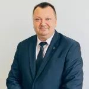

Kontaktai
Vilniaus Kolegija elektronikos ir informatikos fakultetas
El.p.: info@eif.viko.lt
Tel.: +370 657 16911
Adresas: J.Jasinskio g. 15 LT-01111, Vilnius
Dekanas dr. Romanas Tumasonis
Telefono Nr. +370 657 10500
El.p.: r.tumasonis@eif.viko.lt
Prodekanė dr. Loreta Savulionienė
Telefono Nr. +370 649 06969
El.p.: l.savulioniene@eif.viko.lt
Studijų skyriaus vedėja Dalė Neverbickaitė
Telefono Nr. +370 650 12070
El.p.: d.neverbickaite@eif.viko.lt
Katedros vedėjas Paulius Šakalys
Telefono Nr. +370 657 17141
El.p.: p.sakalys@eif.viko.lt